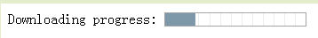
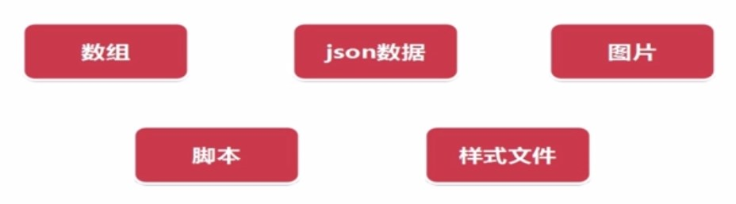

HTML5 Tips
兼容性
IE8以及以前版本的浏览器基本不支持。
html5 不赞成使用的标签
- <applet> 定义嵌入的applet
- <basefont> 定义页面中文本的默认字体、颜色 css
- <big>大号字体 css
- <center> 定义居中文本 css
- <dir>目录列表
- <u> 下划线<a>
- <font> 定义文字字体、颜色等 :css
- <i> 代替：<em>
- <s>定义加删除线
H5 新标签 ,主流浏览器支持的
(有些新标签大多数浏览器不支持就不列出)
- <article> 定义一个文章区域。
- 论坛帖子
- 博客文章
- 新闻故事
- 评论
- <aside> 定义页面侧边栏的内容
- <bdi>设置一段文本，脱离父元素的文本方向设置 只有firefox 和谷歌支持。
- <canvas> 通过脚本绘制图形
- <datalist>下拉列表
<input list="browsers"> <datalist id="browsers"> <option value="x"> <option value="y"> <option value="z"> <option value="a"> </datalist> - <embed> 下划线<a>
- <figure> 定义文字字体、颜色等 :css
- <footer> 代替：<em>
- <header>定义加删除线
- <mark>文字高亮显示
- <progress>标记下载进度
 - <video>视频播放
<video width="320" height="240" controls> <source src="movie.mp4" type="video/mp4"> <source src="movie.ogg" type="video/ogg"> 您的浏览器不支持 video 标签。 </video>
HTML5数据持久化技术
- Application Cache 本地缓存应用所需的文件
- Local Storage ; Session Storage 键值对 (key-value)存储数据
- web SQL
- IndexDB 索引数据库
HTML5 应用程序缓存
- 离线浏览
- 速度-已缓存资源加载得更快
- 减少服务器负载-浏览器将只从服务器下载更新过或更改过的资源
Manifest文件： 列举应用所需的文件，即浏览器被缓存的内容和不缓存的内容Application Cache的浏览器事件，特点： Manifest文件有变化才更新 一次必须更新Manifest中的所有文件 下次才生效:下次打开浏览器才生效
存储方案
cache 缓存 ，其实就是在内存 从DB 磁盘，放在缓存，减少磁盘IO
磁盘文件
图片，视频- 数据库
索引查询 - 内存
频繁去使用，提高读取效率
COOKIES
- a.http请求header上都带着这个cookies
- b.官方文档对每个域名来说，只会存4Kcookies
- c.主Domain 污染
- 还有安全隐患
H5之前，一般用cookies
H5存储
目标： 解决4K的大小问题 解决请求头常带存储信息的问题 解决关系型存储的问题 跨浏览器
本地存储 localstorage
- 大部分Browser都支持~
- 存储形式 ： key-->value
- 过期：永久存储，永不失效，除非手动删除
- 大小：每个域名分配5M
基本API:
Storage.key() // arg : number , 传递一个数n，返回第 n th key的名字。 这个顺序是 user-agent-defined.
- Storage.setItem('username','john');//
- Storage.getItem('username'); //retutn that key's value
- Storage.removeItem('keyname') //remove that key from the storage
- Storage.clear() //empty all keys out of the storage
只要能被序列化成字符串，或转化为字符串的都可以存到localstorage~
图片 用canvas来绘制，返回一个base64 的字符串。 canvas支持程度比较全面。
- 获取or创建canvas画布
- 设置 context var imgcontext=imgcanvas.getContext('2d');
- 设置画布大小为图片大小
- imgContext.drawImage(this,0,0,w,h);//在canvas上画图
-
var imgAsDataurl=imgcanvas.toDataURL("image/jpeg",1.0);canvas.toDataURL(type,encoderOptions)default:image/png , can be image/jpeg or..
sessionstorage
根localstorage相似， 就是新建页面就不存在了。 关闭浏览器or 重新打开一个tab
判断浏览器是否支持 localstorage
判断window.localStorage不健全。
- 可以set 一下，对这个set块异常捕获
- 写数据要异常处理，避免超出容量抛错
- 避免把敏感的信息存入 localstorage
使用限制： localstorage只存客户端，一般服务端无法访问
- 存储更新策略，过期控制
- 子域名之间不能共享存储数据，cookie则可以共享存储数据
- 超出存储大小之后如何存储？FIFO LRU
- server端如何取到，一般跟在http get post相应参数后面
- 利用本地数据，减少网络传输 大型网站，脚本样式等都会放本地
- 弱网络，高延迟，低带宽，尽量本地数据。
Web SQL 和 IndexedDB
一种能在浏览器中持久地存储结构化数据的数据库，并且为web应用提供了丰富的查询能力
浏览器支持程度
| Browser | Basic Support |
|---|---|
| Chrome | 11+ |
| Opera | Not support |
| FireFox | 4+ |
| IE | 10+ |
HTML5 元素与标签结构
em>DOCTYPE 及字符编码
<!doctype html> <meta charset="uft-8"> 文件的字符编码 <html lang="zh-CN">指定语言
H5中，不区分标签大小写：如下
<Input tYpe=Radio>
顺带提一下，单双引号都可以。甚至不写引号：如下
<input type=radio>
布尔值 即原来的checked="checked" 可以直接用 checked代替。
<input type="checkbox" checked/>
| 结构标签 | 媒体标签 | 表单标签 |
|---|---|---|
| section | video | |
| article | audio | |
| aside | embed |